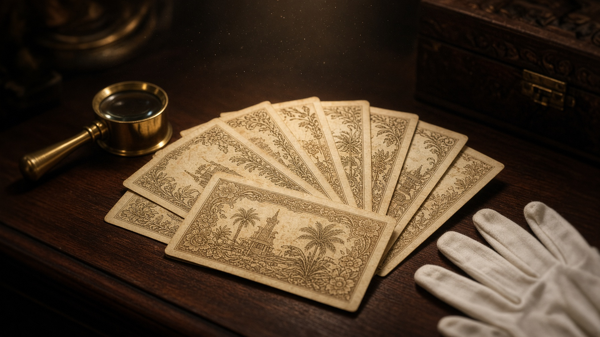
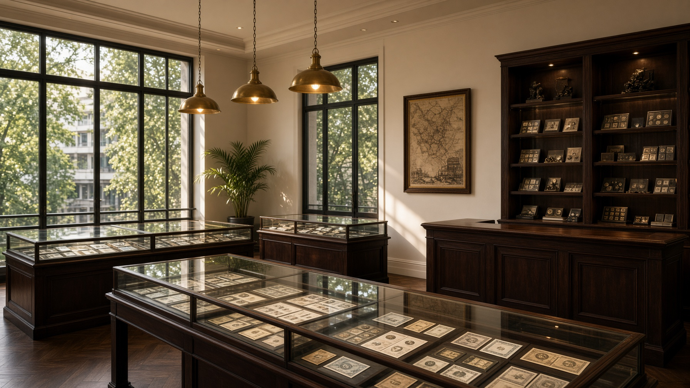

多年收藏经验
长期专注旧钞及钱币收藏市场，持续接触不同国家、年代与版本的收藏品。

关于 Supreme
Supreme 旧钞拍卖场是一家位于吉隆坡 Sentul 的旧钞与钱币收藏买卖机构。我们相信，旧钞并不仅仅是一张过去使用过的纸币——每一张旧钞，都记录着一个时代的经济、文化与历史。
收藏的不只是一张钞票，而是一段历史。
认识我们
为什么选择 Supreme
长期专注旧钞及钱币收藏市场，持续接触不同国家、年代与版本的收藏品。
Sentul 实体经营，收藏者可到店接触实物，现场选购或交易。
重视年份、版本、品相及稀有程度，提供更全面的资讯，而不是口头报价。
从马来西亚旧钞到国际纸币、钱币、刀货砖头与特殊号码，持续整理不同类型的收藏项目。
通过直播展示最新收藏品，让无法亲临实体店的收藏者也能了解最新藏品与活动。
除旧钞旧币外，亦提供白银与黄金回收咨询，方便一次处理家中闲置收藏。
给收藏新手
其实并不一定。旧钞的收藏价值通常需要综合考虑年代、发行数量、版本、保存状态、稀有程度及收藏市场需求。一张年代非常久远的纸币，不一定比一张发行数量较少、保存状态更好的纸币更有收藏价值。
收藏的意义，不只是价格，更是认识历史与保存文化。
阅读收藏知识常见问题
旧钞的价格没有统一标准，需要根据年份、版本、品相、稀有程度及市场需求判断。建议提供实物照片，或带实物到吉隆坡 Sentul 实体店评估。收藏品价格会因市场情况而有所不同，实际价格需根据实物进行评估。
不一定。不同旧钞的市场需求与收藏价值差异很大。年代久远并不等于更值钱，发行数量、保存状态和收藏热度往往更关键。
Supreme 旧钞拍卖场位于吉隆坡 Sentul Point，提供旧钞回收及收藏品买卖相关服务。可先 WhatsApp 012-756 8819 预约，或于营业时间到店。
可以。钱币的年份、版本、保存状态及稀有程度等因素都会影响收藏市场价格。欢迎拍照咨询或到店评估。
可以。世界各地历史纸币都拥有不同的历史背景和收藏特色，我们也经常整理外国钞与中国老票等项目。
咨询
不确定手上的旧钞是什么？不知道旧钱币有没有收藏价值？想寻找特别的历史纸币？欢迎联系吉隆坡 Sentul 实体店，或直接 WhatsApp 咨询。